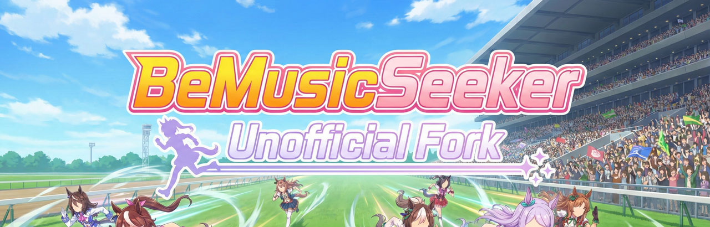

BeMusicSeeker Unofficial Fork

Overview
This project is an unofficial fork created by decompiling, modifying, and rebuilding BeMusicSeeker.exe bundled with Sayaka / 黒皇帝's BeMusicSeeker-installer.
This fork was not made with direct permission from the original binary author, @rib_2_bit. However, because the original binary was distributed under the MIT License, we believe creating and publishing this derivative version is permissible.
Important note about this repository
To the best of our knowledge, the original source code has never been published. This project also does not publish most of the decompiled source code. In practice, this repository is maintained as a distribution point for modified release packages and as a public archive for newly created scripts and patch-style code added by this fork.
Installation
For first-time setup, operating modes, and screen-by-screen usage, see the User Manual.
- Install Everything 1.5 Alpha (x64) if possible - The app can run without Everything, but startup, reload, and install-destination estimation are much faster in large libraries when Everything is available. - After installing Everything, let it finish indexing the directories that contain your BMS files before starting BeMusicSeeker.
- Download the release package - Download the latest package from the Releases page. - Do not run the app directly from the ZIP. Extract it into any writable directory. The app is portable and does not require installation.
- First launch and settings
- The first launch opens the language selection and settings dialogs. Choose the operating mode and configure BMS directories, and when using LR2 mode,
song.db,config.xml, score DB, and related paths. - See Initial Setup and Settings Dialog. - If a traditional BeMusicSeeker installation already exists, its settings are copied automatically. The copied settings are stored under.\config\user.configin this fork's directory, so the original BeMusicSeeker installation is not modified. - When using LR2 linked mode, back upsong.db,config.xml, score DB, and related files before the first scan. - Usage and logs
- See the User Manual for basic operations.
- See Install / Pending Packages for chart installation and pending-package workflows.
- See the Keyword Search Syntax Guide for advanced search syntax.
- Launching through
LaunchWithInfoLog.batwrites more detailed logs toapplication.logandinstall-performance.log. See the INFO log guide for how to read them.
Change Summary
This section highlights representative improvements. See the User Manual for details and cautions.
This fork includes features that can modify or delete BMS-related databases and files. Use it at your own risk.
Main improvements
- Faster startup, reload, and chart installation
- Uses Everything 1.5 Alpha x64 for fast file enumeration and reworks initialization, file-diff, and DB update processing.
- Focuses on workflows that become heavy in large libraries, including install-destination estimation, pending-package processing, duplicate-file checking, and playlist display.
- The main list view has been reorganized around a custom table view with column settings, sorting, tooltips, and playlist summaries that remain usable in large environments.
- bmson support
- bmson files can be handled as chart files alongside BMS / PMS in the library, installation, duplicate checking, and playlist display.
- Built-in playback and audio conversion for bmson are not supported yet. See Playback / Recording.
Other notable improvements
- Standalone mode
- The library can be managed with
data/song.dbunder the app directory without using LR2'ssong.db. - Portable app packaging
- Settings are saved under
config/user.configin the extracted directory. Existing BeMusicSeeker settings are copied on first launch. - Install / pending-package improvements
- Adds and improves differential destination estimation, manual destination input, merge-destination estimation, smart overwrite, cleanup of already-owned packages, and zero-note chart invalid-extension rename.
- Playlist improvements
- Adds playlist summary, external sync
STATUS, single/range reload, and URL1/URL2 completion improvements. - Can export all playlists as aggregated
.bmttable cache files under beatoraja'stabledirectory. This is intended for environments where beatoraja's own level aggregation is slow. - Maintenance improvements
- Adds and expands status-check screens such as LR2 compatibility warnings, zero-note search, parse errors, full resource scan, and duplicate-file checking.
- UI, logs, and multilingual support
- Improves theme support, settings dialog organization, status-bar progress, log output, and multilingual resource handling.
TODO
These are rough notes. Priority is mixed, and completed items are removed over time.
- BMS Score Viewer screen for unregistered charts - Should md5 values that could not be uploaded, for example because the chart was too large, be stored locally? Otherwise they may remain in the unregistered list indefinitely. - The approach used by bms-score-uploader seems like a good reference.
- Download LR2IR rival data, convert it into a local database, and place it automatically
- Clear lamp viewer
- Course content display and ordering editor
- Replace hardcoded URLs that are now broken - LR2IR cache-related data is expensive to prepare and maintain. Ideally, a proxy server would fetch from LR2IR only when the last update is more than 24 hours old.
- Warning dialog when Everything 1.5a integration fails
- Continue checking the custom folder export feature - This is an important core feature, so its behavior and regressions should continue to be reviewed.
- Consolidation feature for duplicate
.wavand.oggfiles
License Scope
First-party source code newly created and published in this repository, such as scripts, is distributed under the MIT License, following the original binary.
- New first-party code, including public scripts: MIT License. See
LICENSE. - Third-party binaries, fonts, SDKs, and similar components: These bundled external components are governed by the licenses and terms of their respective providers.
- If terms conflict, the provider's license and notices take precedence for that component.
Audit trail and third-party notices
ThirdPartyNotices.txt: notices and legal-risk notes for bundled dependencies.third_party/licenses/: original license texts for bundled proprietary components, fonts, and similar assets.
Important Notice About BASS
The release package includes BASS-related audio components that are outside the scope of the MIT License.
These binaries are not open source. Commercial use requires an appropriate commercial license from the provider, such as un4seen. Non-commercial personal use may be allowed as freeware in some cases, but you must always comply with the official license terms of native BASS and the Bass.Net wrapper.